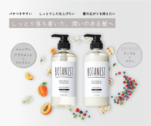

シャンプーのバナー
制作時期：2022年3月
制作時間：5時間
使用ツール：Illustrator・Photoshop
シャンプーメーカー、”ボタニスト”をモチーフに自主練習用に製作しました。
植物やフルーツを周囲に散りばめるように配置し、シャンプーやトリートメントがふんわりと香っている様
子を表現しました。
シンプルなボタニストのパッケージに合わせて落ち着いた配色にしましたが、ターゲットの10〜30代の女
性の心に刺さるようおしゃれなくすみカラーを意識しました。